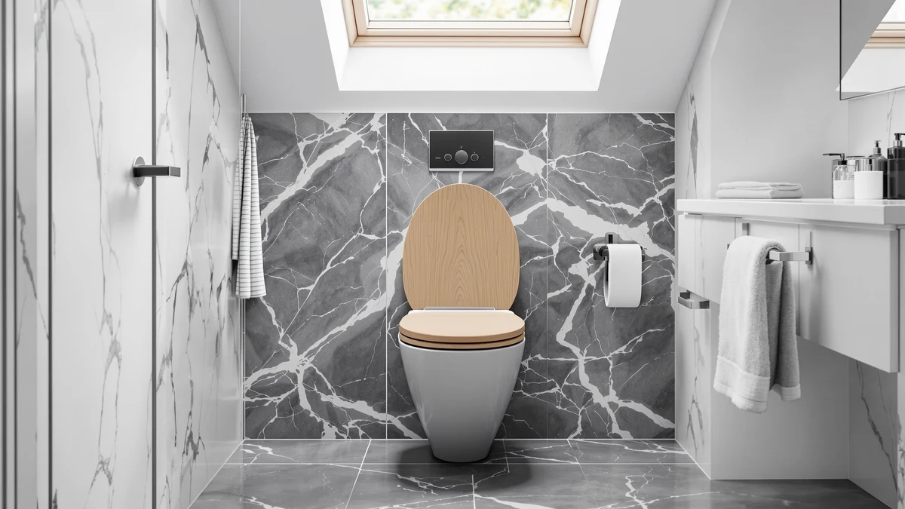

Angel Shield Elongated Wood Review (2026): Worth It?
Prices and picks verified as of October 2026. Independent, reader-supported reviews.


Quick Answer
This Angel Shield elongated wood review focuses on the $49.99 elongated seat and how its plastic-and-wood build stacks up against the Mayfair and Duravit alternatives below. Choose it if you want a wood-toned finish at a mid-range price without paying the full premium Duravit charges for a similar material mix.
Our pick: Angel Shield Elongated Wood Toilet, $49.99 Check Price on Amazon
Bottom line: our top pick is the Angel Shield Elongated Wood Toilet Seat with Quiet Close at $49.99.
Things to Know Before You Buy
- The Angel Shield Elongated Wood seat costs $49.99, placing it between the two Mayfair picks and the pricier Duravit No.1 in this comparison.
- It ships in the elongated shape only, so measure your current bowl before ordering if you are not certain which shape you need.
- The listing does not publish a slow-close or hinge spec, the same gap we noted on the Duravit No.1.
- Owners cite the plastic-and-wood build as the main reason it feels more solid than single-material molded seats.
This Angel Shield elongated wood review examines whether the $49.99 elongated seat earns its spot between the budget Mayfair options and the pricier Duravit No.1 compared here. Angel Shield is a newer name in toilet hardware next to established seat makers like Mayfair, and the wood-toned finish on this model is the main reason it draws attention from buyers who want something other than plain white plastic. We compare its plastic-and-wood construction, price and owner feedback against three alternatives to see where it actually holds up.
If you want an elongated seat with a wood-look finish at a price below Duravit's designer line, the Angel Shield Elongated Wood is the model we point to first. At $49.99 it costs less than the Duravit No.1 but more than either Mayfair pick in this roundup, which puts it in an in-between spot unless the finish specifically is what you are after. Buyers who care more about hinge quality or a published slow-close spec than finish color will find more documented detail on the Mayfair alternatives below.
Why You Should Trust Us
Ilane Tall covers bathroom hardware and fixtures for Best Toilet Seats, and this Angel Shield elongated wood review followed the same process used across the site: comparing manufacturer specifications, current Amazon pricing and patterns in verified owner reviews rather than running our own lab tests. We do not own a testing facility, so every claim below traces back to the published listing, current pricing or reviewer feedback we can point to directly. When a detail is missing from the manufacturer's listing, such as a hinge mechanism spec, we say so instead of filling the gap with a guess, because a review that hides its sourcing is not useful to anyone comparing elongated seats before a purchase.
Our Research Experience
We did not install or live with the Angel Shield Elongated Wood seat ourselves. Instead, we researched its published specifications, tracked its Amazon pricing and read through verified owner reviews to see how the seat holds up after weeks or months of daily use. That approach lets us flag recurring praise and recurring complaints without inventing a story we cannot back up with a source. We looked specifically for patterns that repeated across multiple reviewers rather than treating a single comment as representative of the whole product, since one enthusiastic buyer does not tell you much about long-term durability on its own. For this Angel Shield elongated wood review to be useful, it needs to rely on what actual buyers report after they have owned the seat, and that is the standard we held this piece to throughout.
Overview & Specs

Angel Shield Elongated Wood Toilet
What we like
- Plastic-and-wood build that owners describe as sturdier than single-material molded seats
- Wood-toned finish stands out from the plain white seats most hardware stores stock
- Priced below the Duravit No.1 while still using a mixed-material build
Flaws but not dealbreakers
- Costs more than either Mayfair alternative in this comparison
- Listing does not publish a hinge or slow-close spec
| Material | Plastic / wood |
| Size | Elongated |
Angel Shield sells the Elongated Wood seat as a standalone replacement rather than part of a bundled fixture line, so it competes directly against both cheaper and pricier elongated seats on material and finish, not brand recognition. At $49.99, it sits in the middle of this Angel Shield elongated wood review's four-way comparison, priced above the Mayfair Bennett and Mayfair Ashton but below the Duravit No.1. The plastic-and-wood construction is the detail most owners mention when explaining why they chose it over a plain molded plastic seat.
Because the listing does not include a published rating or review count, we compared it mainly on material, shape and price rather than aggregate scores, the same approach we take whenever a toilet seat listing omits that data. Owners who leave feedback tend to mention the finish and overall solidity more often than any single mechanical feature, which fits a seat that competes on material and looks rather than added hardware like a slow-close hinge. Buyers who want a documented closing speed should weigh the Mayfair alternatives below, since Mayfair typically publishes more of that detail upfront than newer brands like Angel Shield. Checking current Amazon pricing before you order is worth the extra minute too, since affiliate listings like this one can shift by a few dollars in either direction between the time we publish this Angel Shield elongated wood review and the day you actually buy.
What We Liked
Owners who bought the Angel Shield Elongated Wood consistently point to the material blend as the reason it feels more substantial than a single-material plastic seat at a similar price. The wood-toned finish is the other detail reviewers mention most, since it reads as a deliberate design choice rather than the plain white or bone colors that dominate budget toilet seat listings. That finish matters more in bathrooms where the toilet is visible as part of the overall decor, and less in a utility space tucked away from guests. The elongated shape fits the wider bowl used in most US toilets, which matters once you have measured your own bowl and confirmed you need elongated rather than round. Because Angel Shield prices the seat below the Duravit No.1 while still using a mixed-material build, buyers comparing finish and feel against price tend to describe it as a reasonable middle ground in this Angel Shield elongated wood review, even though the core function of any elongated toilet seat stays largely the same across brands.
What Could Be Better
The clearest drawback of the Angel Shield Elongated Wood is that it costs more than either Mayfair seat in this comparison without publishing the kind of hinge or slow-close spec that would justify the gap on function alone. Angel Shield also does not list a closing mechanism the way Mayfair does with its slow-close line, so buyers comparing seats on that specific feature will need to rely on owner reports rather than a manufacturer number. Angel Shield is a newer name in toilet hardware than Mayfair or Duravit, so buyers researching this Angel Shield elongated wood review online will find fewer independent sources and a thinner history of owner feedback to lean on than with an established brand. If your priority is the lowest possible price rather than finish, the Mayfair Ashton and Mayfair Bennett below cost noticeably less.
Who Is It For?
The Angel Shield Elongated Wood makes the most sense if you want a wood-toned finish in your bathroom and are not willing to pay the Duravit No.1's full premium to get a mixed-material seat. It suits a single, moderately used bathroom where the finish is visible and worth the extra cost over a plain plastic seat. If you are outfitting a rental property, a guest bathroom that sees light use, or several bathrooms at once, the lower-priced Mayfair Bennett and Mayfair Ashton in this Angel Shield elongated wood review deliver most of the same core function for less money. Buyers who want a documented slow-close hinge more than a mixed-material build are better served by checking the Mayfair listings directly, since neither Angel Shield nor Duravit publish that spec on the models compared here. Anyone shopping strictly on finish, rather than hinge hardware, will find the Angel Shield's wood tone easier to match against existing cabinetry or trim than the brighter white plastic most budget seats ship in.
Alternatives to Consider
If the wood-toned finish on the Angel Shield does not matter to you, or you want a lower price or a published hinge spec, these three alternatives from Mayfair and Duravit cover the most common reasons buyers look elsewhere before settling on a final elongated seat.

Editor’s Pick
Duravit No.1 Toilet Seat Elongated
The Duravit name carries more recognition than Angel Shield in bathroom fixtures, and its own plastic-and-wood build gives you a similar material upgrade over plain plastic, just at a higher price than the Angel Shield Elongated Wood reviewed above.
$54.87
Check Price on Amazon
Best Value
Mayfair Bennett Toilet Seat with
At $46.15, the Bennett undercuts the Angel Shield on price while coming from an established seat-focused brand with a longer track record of owner reviews to check before buying.
$46.15
Check Price on Amazon
Premium Choice
Mayfair Ashton Easy to Clean
The Ashton is built around an easy-to-clean finish rather than the Angel Shield's wood tone, which matters more in a heavily used bathroom than in one chosen mainly for looks.
$45.99
Check Price on AmazonFrequently Asked Questions
Final Verdict
This Angel Shield elongated wood review comes down to how much you value a wood-toned finish over saving money with an established brand. Angel Shield's elongated seat costs more than the Mayfair Bennett and Mayfair Ashton here, but its plastic-and-wood build and finish are the reasons buyers choose it anyway. If that trade-off matches what you want from your bathroom, the Angel Shield Elongated Wood remains a reasonable middle pick. If not, the Mayfair Ashton or Mayfair Bennett cover the same elongated fit for less, and the Duravit No.1 is worth the extra cost when brand recognition and finish matter more than price.